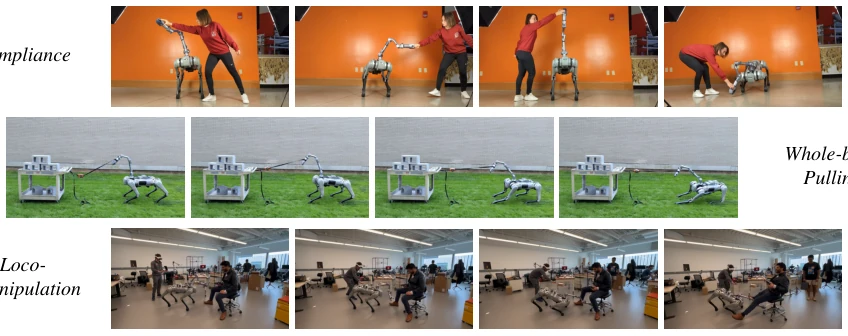
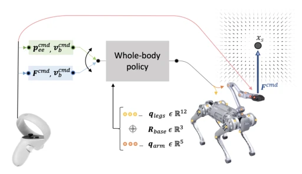
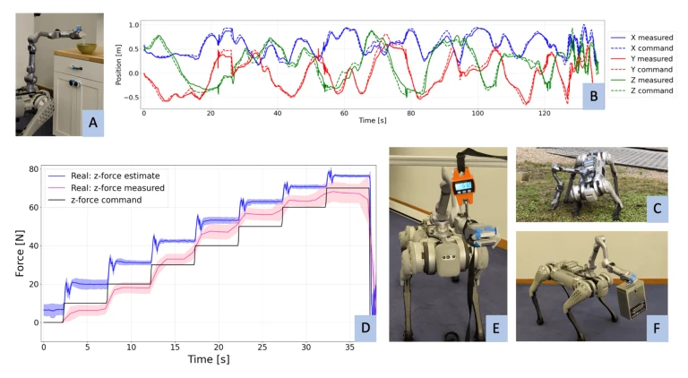
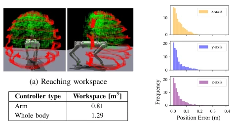

This paper attempts to solve the force control problem of legged manipulators using reinforcement learning. The core highlight is controlling contact forces without external force sensors, which sounds appealing, given that force sensors are expensive and prone to failure. The authors utilize proprioception to estimate forces, achieving whole-body impedance control and gravity compensation, making teleoperation more intuitive. However, a 5N force control error and 5cm position error may be insufficient for precision tasks. Although they claim it is a 'first deployment', essentially it turns the force control task into RL reward optimization, with significant hardware dependency. Overall, it is an interesting engineering attempt that provides new ideas for teleoperation, but still far from general force control; accuracy bottlenecks may limit its application in high-demand scenarios, and the sim-to-real force estimation gap still needs attention.
Existing RL often implicitly regulates force in contact tasks, lacking explicit force control capabilities [1]-[4]. Although some works achieve force interaction, they cannot directly command force magnitude, limiting compliance regulation [8]. Traditional force control relies on force sensors or models, while this paper aims to solve the force control problem without sensors. Legged manipulators require whole-body coordination to apply large forces, but existing methods struggle to balance motion and force control [14]. The authors hope that during human teleoperation, only the end-effector needs to be commanded, with the body adjusting automatically, achieving safe interaction and gravity compensation. This solves the morphology mismatch problem in teleoperation, allowing humans to focus only on task intent rather than underlying joint control, improving human-robot interaction robustness.

Fig. 1: We train a whole-body policy to control the force applied at the end effector of a legged manipulator. This enables compliant interaction (top) and whole-body force application (middle). Closing the loop to perform impedance control allows the teleoperator to modulate the gripper’s compliance during loco-manipulation (bottom).
Overall adopts a Sim-to-Real RL framework, based on the PPO algorithm. The policy network inputs proprioceptive states (joints, IMU, historical actions) and outputs joint position targets. The innovation lies in introducing a simulated external force field (spring-damper model) during training, allowing the manipulator to learn force tracking in virtual contact. The state estimation module is trained simultaneously, predicting privileged states (such as real external forces) from proprioception to compensate for the sensor deficiency. The reward function includes motion, position, force tracking, and safety; position and force modes are trained alternately, switched via switch commands. The final policy supports impedance control, achieving spring-mass-damper behavior through a feedback loop. Training uses PPO, parallel environment acceleration, state estimator assists optimization, ensuring the policy can generalize in real environments.

Fig. 2: System architecture. In addition to the position com- mand pcmd ee , we consider training a policy to track a commanded end effector force Fcmd while walking following a base velocity command vcmd b . A human operator defines the commands using a joystick or hand-tracking headset [25]. To learn force tracking, we train the policy in a potential field where the gripper is pulled towards a randomized setpoint xs (right).
Deployed on the Unitree B1 quadruped robot, equipped with the Z1 manipulator. Force control verified using a force gauge, error 5-10N. Demonstrated tasks such as pouring water, lifting a 4kg box, impedance control dragging chair, etc. Position tracking error is about 5cm. Whole-body coordination expands the workspace by 59% compared to a fixed arm. A sim-to-real gap in force estimation was found, but force tracking performance is robust. Teleoperation demonstration proves humans only need to command the end-effector, with the body automatically compensating gravity. Long trajectory tracking accuracy was verified through motion capture, proving the method's effectiveness in real physical environments; although precision is limited, it is sufficient to complete various loco-manipulation tasks.

Fig. 4: Real-world deployment. We deploy our policy in a variety of real-world scenarios: (A) water pouring in a kitchenette; (B) tracking a long end effector trajectory in position control mode with performance verified by motion capture; (C) outdoor whole-body reaching; (D, E) quantitative measurement of the force application control by pulling down on a dynamometer; (F) lifting a 4 kg box while maintaining compliance in the gripper, showcasing gravity compensation. In subfigure (D), each line represents the mean across five force setpoints, with the shaded area indicating the standard deviation.

Fig. 5: Expanded workspace. (A-B) The whole-body policy in position control mode (red) enlarges the fixed arm workspace (green) by 59%. (C) The position error distribution shows the tracking accuracy while standing in place, evaluated across 1000 end effector positions sampled from the training distribution.